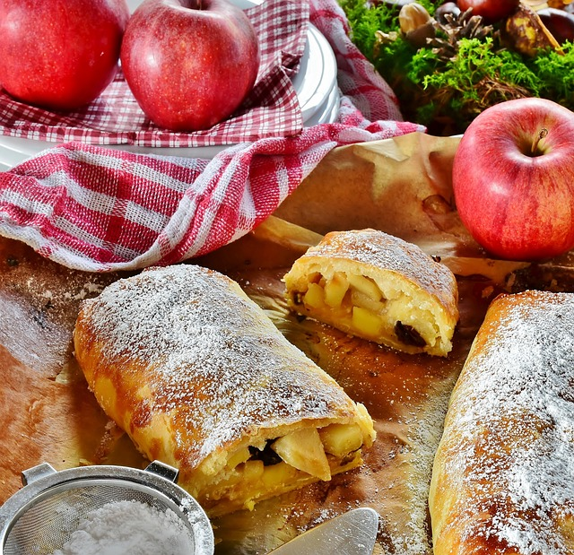

Vegan Strudel

What's a strudel?
Strudle is a Austrian layered pastry with a filling that is usually sweet. The one we will be teaching you to make today is one of the best-known varieties, made from
apples. In this version we will only be using non-animal-derived ingredients to make this a compassionate dish.
What will you need?
- Apples
- Walnuts
- Flour (we will use all-purpose flour)
- Vegan frozen puff pastry
- Sugar
- Non-dairy milk (we will use oat milk)Optional
- Powdered sugar Optional
- Spices
- Cinnamon
- Salt
- Lemon juice
How to do it?
- Take the puff pastry out of the freezer.
- Peel and slice the apples. Put them on a mixing bowl and add the flour, walnuts, lemon juice, plain sugar, cinnamon and salt. Mix it all together.
- Roll you pastry on a sheet of parchment paper in a rectangular shape and cut 2-cm wide strips along the long sides of the rectangle.
- Arrange the apple mix in the middle of the rectangle making sure it doesn't get to the edge where the cuts you made begin.
- Preheat the oven to 200ºC
- Fold the strips inwards and over the filling.
- Brush the pastry with the non-dairy milk and place it on the oven. Once the crust is golden and the filling is softer you can take it out.
- Carefully sprinkle the powdered sugar on top. Let it cool for a while and enjoy warm!
Guten appetit! You can enjoy it alone or with some vegan vanilla ice cream.